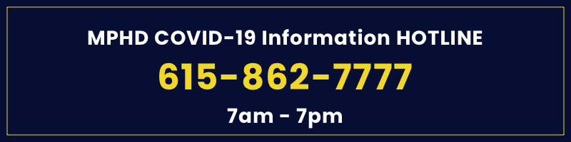

The coronavirus you are hearing about — COVID-19 — is a respiratory illness that can spread from person to person. It was first discovered in China in late 2019.
The severity of the illness varies from person to person.
For many people, the virus will not lead to any serious complications or hospitalization, but some cases can lead to pneumonia or even acute respiratory distress syndrome (ARDS), which requires a patient to be put on a ventilator with oxygen. If the lungs are damaged and insufficient oxygen reaches the rest of the body, respiratory failure can lead to organ failure and death.
People with compromised immune systems or underlying medical conditions (such as heart disease, liver disease, diabetes, or respiratory illness) and those older than 60 are most at risk of serious infection.
The virus is spread mainly from person-to-person contact – like shaking hands – and through respiratory droplets produced when someone with the virus sneezes or coughs.
The virus can remain on objects or surfaces touched by someone with COVID-19. If you touch a contaminated object or surface and then touch your mouth, nose or eyes, the virus can spread to you.
Most early cases of COVID-19 in the United States were associated with travel in countries where the virus was more prevalent. Increasingly, however, the virus is “community-acquired” — caught through close contact with someone who tested positive for COVID-19.
People with compromised immune systems or underlying medical conditions (such as heart disease, liver disease, diabetes, or respiratory illness), and those older than 60, are at higher risk for developing more serious complications from COVID-19.
That said, all people, regardless of risk factor, should take preventive measures to reduce the spread of illness. COVID-19 is a new disease, and we are still learning about it.
Social distancing means maintaining a greater than usual physical distance from other people or avoiding direct contact with people or objects in public places during the outbreak of a contagious disease in order to minimize exposure and reduce the transmission of infection.
By taking community isolation measures, we can keep the daily number of disease cases at a manageable level for medical providers. A slower infection rate means a less stressed health care system, fewer hospital visits on any given day and fewer sick people being turned away.
Wash your hands before you leave the house, so as not to spread your household germs, and once you arrive at your destination to remove germs picked up on the way, from doors, elevator buttons, or your vehicle.
Wash your hands before and after you prepare food and before and after you eat.
Wash your hands after cleaning objects or surfaces.
Wash your hands before and after tending to your child.
Wash your hands after touching a shopping cart, basket or other common surface; after you use the bathroom, blow your nose, cough or sneeze.
The CDC recommends wearing face masks or cloth face coverings in public to slow the spread of the virus, and help people who may have the virus and do not know it from transmitting it to others. Cloth face coverings fashioned from household items or made at home from common materials at low cost can be used as an additional, voluntary public health measure.
Please do not wear surgical masks or N-95 respirators. Those are critical supplies that must continue to be reserved for healthcare workers and other medical first responders.
Do not go to work, school or any other public places.
As with many other viruses, you need to rest, drink fluids and control fever to help relieve symptoms.
If you have symptoms associated with COVID-19 (fever, cough, fatigue, shortness of breath), self-quarantine and contact your health care provider or call the Metro Public Health Department COVID-19 Hotline at 615-862-7777 (7 a.m. – 7 p.m., daily).
If you are sick but do not have symptoms associated with COVID-19 (fever, cough, fatigue, shortness of breath), stay home and rest – unless you need to get medical care. If you develop symptoms of COVID-19, self-quarantine and contact your health care provider or Metro’s COVID-19 Hotline.
Separate yourself from other people in your home. Avoid sharing household items with others in your home.
If you have chest pain, shortness of breath, dizziness, a severe headache or other potentially life-threatening problems, go to the nearest emergency department or call 911.